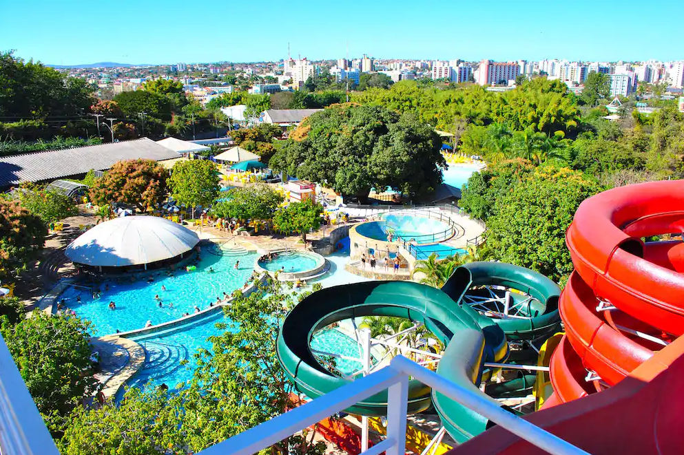

Dalva Turismo
Buscando um turismo de qualidade? Veio ao lugar certo!
Aqui você encontra diversas opções de viagens, além de não faltar qualidade e um bom preço.
Com a guia Dalva, que está no ramo a mais de 30 anos, segurança não falta!
Excursões

São Paulo - Comercial

Caldas Novas

Morro de São Paulo
Sul - Internacional